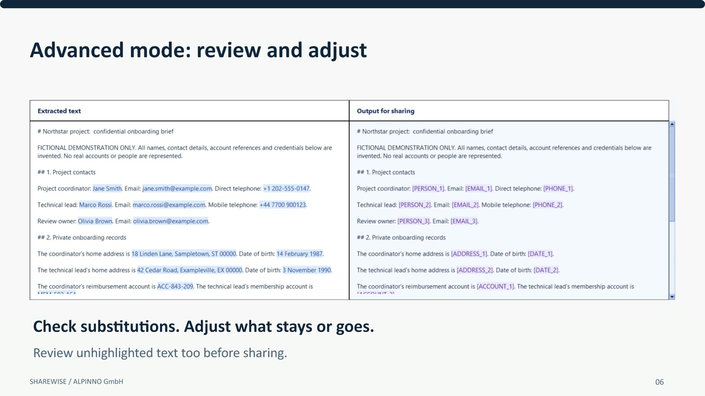

Prepare locally
ShareWise extracts supported text and identifies private details on your Windows computer. It does not send your document to a processing server.
ShareWise | Windows document preparation
Extract text on your computer, review detected private details, and decide what to share. If an AI response needs the original details, restore matching placeholders locally with your private restoration file.
Windows x64 Portable application Local processing

A deliberate step before sharing
ShareWise helps make document preparation part of your AI workflow. You can check the extracted text, adjust what stays or goes, and share only the reviewed output you choose.
ShareWise extracts supported text and identifies private details on your Windows computer. It does not send your document to a processing server.
Inspect the text, adjust suggestions, add exact confidential terms, and acknowledge extraction warnings before exporting a reviewed result.
Bring an AI response back to ShareWise and optionally restore exact matching placeholders with the corresponding private restoration file.
From file to reviewed text
Choose a supported file or paste text. ShareWise extracts text and suggests private details to replace.
Compare extracted text with the prepared output. Keep or hide suggestions, add exact terms, and review the full text.
Save reviewed text as plain text or Markdown. Sending it to ChatGPT or another AI service is a separate choice you make.
Review an AI response with its matching restoration file. ShareWise restores intact exact placeholders; it does not guess missing identities.
See the workflow
The demonstration uses fictional sample content. It shows local preparation, review and optional restoration as separate steps.
AI-generated narration using OpenAI's Cedar voice. Claims and examples below retain their stated scope.
Before you send a document to ChatGPT, prepare it with ShareWise. Hide detected private details locally, then share the prepared text with ChatGPT or another AI. If you need the original names back in the answer, restore them locally in ShareWise. That final step is optional. You choose what to share.
Claim scope: ShareWise preparation and restoration run locally; ChatGPT is a separate online step. Restoration requires intact matching placeholders and the private restoration file.
ShareWise runs entirely on your computer, with no internet connection required. Even completely disconnected, you can prepare documents and restore private details. Your document content is not sent to a server for processing. Choose a Word document, a text-based PDF or a PowerPoint file. Detected private details become consistent placeholders. The detection model achieved 98% token-level recall in benchmark testing. Results vary by document.
Claim scope: 98% detection-model token recall on PII-Masking-300k, not end-to-end ShareWise document accuracy. No OCR. Offline processing applies to ShareWise, not the external AI service.
And you can make it specific to your business. Add a CSV list of client names, companies or project references you want hidden. ShareWise automatically replaces exact matches in the extracted text, alongside its AI detection. Your own confidential-term lists add another layer of control.
Claim scope: Exact case-sensitive matching in extracted text from successfully loaded lists.
ShareWise gives you two ways to work: Minimal mode for one-click preparation, and Advanced mode for review and control.
Claim scope: Minimal automatic preparation; Advanced review.
In Minimal mode, select your file and ShareWise does the rest: prepares the text, saves the result and opens the output folder. One simple step to remove detected private details before sharing. Even when you're short on time, privacy preparation can be part of your routine.
Claim scope: One-click means file selection triggers processing and saving, not total setup clicks.
For more sensitive documents, use Advanced mode to give the result your final approval. An intuitive side-by-side view aligns the original extracted text with the redacted version, making it easy to check the automatic work and adjust what stays or goes. Review the unhighlighted text too, then share the prepared result with greater confidence.
Claim scope: Extracted original versus prepared text, not native original layout. Review unhighlighted text.
ShareWise also remembers your explicit keep and hide decisions locally. When those same terms appear again, your saved choices are applied, helping you avoid repeating the same corrections.
Claim scope: Explicit exact keep/hide memory, not model retraining.
Now take the prepared text into ChatGPT or another AI. Need the original names back in the answer? Bring the response into ShareWise and restore matching placeholders using your private restoration file. Keep that file to yourself.
Claim scope: Only intact matching placeholders. Never upload the confidential map.
There's an efficiency benefit too. In our illustrative image-rich PDF comparison, leaving out unnecessary visuals reduced document input tokens by about 90%. Actual savings depend on the document and how the AI processes it.
Claim scope: Illustrative calculation: 38,560 versus 4,120 document input tokens, 89.315% reduction. Not a typical saving.
Let ShareWise handle the repetitive preparation, so you can focus on the work you wanted AI to help with. ShareWise, by ALPINNO. Your documents. Your rules. Your choice of what to share.
Claim scope: AI-generated narration.
What it supports
ShareWise is a portable Windows x64 application. No customer Python setup, account or model server is required. The interface is available in English, Italian, German and French.
Per-file limits are 25 MB and 200 PDF pages. Prepared exports are plain text or Markdown. Restored exports can also be RTF.
Private files need care
The separate restoration JSON contains original private values and is not encrypted. Keep it locally and do not upload it with the prepared text.
Optional correction memory is enabled by default. It saves terms from deliberate keep or hide actions in local CSV files. These files are not encrypted; you can disable learning or clear its saved decisions in Settings.
If you choose to send reviewed text to ChatGPT or another AI service, that is a separate online step. You decide what to send. Never upload the restoration file.
ShareWise by ALPINNO GmbH
For information about current availability, evaluation options and licensing, contact ALPINNO.
On the enquiry form, choose “Another topic” and mention ShareWise.